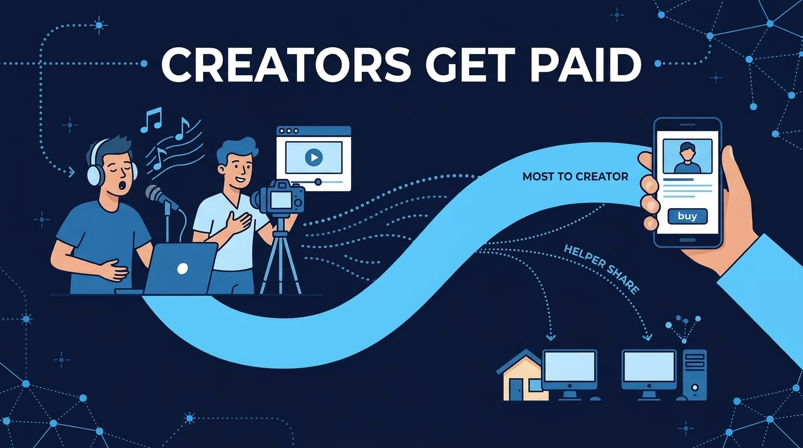
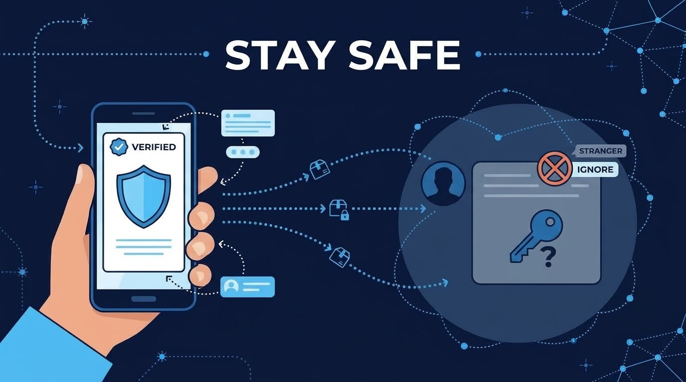
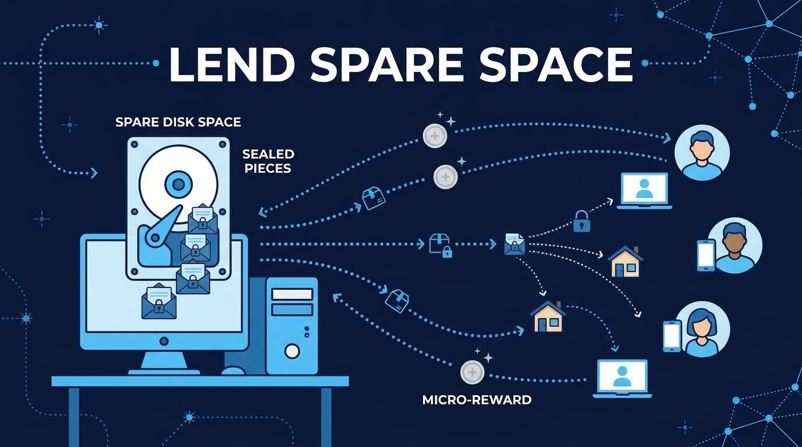

web3os.space 白話介紹
您的檔案，存放在沒有任何單一公司能掌控的空間。
把加密檔案分散存放在許多一般電腦上，並真正付費給保管、傳送檔案的人。
加入測試網：前往 Telegram 群組 | 詐騙警示：我們絕不會主動私訊您。查看安全守則
一家公司，還是許多台電腦？

- web3os.space 是以區塊鏈為基礎的點對點 (P2P) 加密檔案儲存。
- 透過 web3os.space 應用程式使用，不需要懂「加密貨幣」。
- 您的檔案在離開裝置之前，就已經加密。
| 一般雲端服務 | web3os.space | |
|---|---|---|
| 誰保管您的檔案 | 一家公司 | 許多國家的許多台電腦 |
| 誰能讀取您的私人檔案 | 公司可以 | 沒有人：檔案在離開裝置前就已加密 |
| 誰訂定規則和價格 | 公司，隨時可改 | 公開的規則，只能由使用者投票修改 |
| 公司倒閉時 | 您的檔案和購買內容可能消失 | 沒有公司可以倒閉，網路持續運作 |
| 您買歌曲或影片時，誰賺到錢 | 大部分歸平台 | 大部分歸創作者，自動付款 |
創作者獲得報酬

- 發布您的影片、音樂或文字作品，每筆銷售您拿最大的分成。
- 款項自動入帳。買家遇到病毒或損毀的檔案，可以申請退款。
- 搜尋和預覽免費。好內容依實用程度排名，而不是靠廣告。
保障安全

- 官方帳號只有少數幾個。我們絕不會主動私訊您。
- 我們的任何人都不會向您索取助記詞、金鑰、密碼或代幣。
- 目前處於測試階段。測試幣免費，沒有任何價值。
出借您閒置的空間

- 用 Linux 或 Windows 電腦，出借閒置的硬碟空間和網路上傳速度。
- 您保管的是自己讀不到的加密碎片。網路會檢查並付費給您。
- 獎勵是網路中的真實貨幣，不是困在單一網站的點數。
從哪裡開始？
使用者
- 在應用程式中建立免費帳號，不需要身分證件。
- 搜尋與預覽完全免費。私人儲存檔案只需支付少量費用。
出借電腦
- 在測試網上，讓一台 Linux 或 Windows 電腦開機運作數週。
- 在 Telegram 群組報名，我們會把步驟寄給您。
創作者
- 在額度內免費發布。每筆付費下載，您都拿最大的分成。
- 登記為作品的擁有者，才能領到完整的收益。
詳細資訊
什麼是 web3os.space？
web3os.space 是以區塊鏈為基礎的點對點 (P2P) 加密檔案儲存，並付費給保管、傳送檔案的電腦。 名稱就是它的意思：您的檔案存放的空間。
- 您透過 web3os.space 應用程式使用它。
- 您不需要懂電腦、代幣或「加密貨幣」。
我的檔案存在哪裡？如果有電腦速度很慢怎麼辦？
- 應用程式在您自己的裝置上加密檔案，並切成小碎片。
- 世界各地許多一般電腦負責保管這些碎片。碎片以只有您讀得懂的密碼寫成。
- 網路會持續檢查碎片是否還在，只付費給通過檢查的電腦。
- 下載時，應用程式從多台電腦收集碎片，而不是從某家公司的伺服器取得整個檔案。
- 如果某台電腦速度很慢，應用程式會改問下一台持有同一碎片的電腦。
- 速度慢的電腦，這個碎片就略過它，所以一台慢速的傳送者不會拖慢您的下載。
- 回應快的電腦負責傳送碎片，並獲得專案自有代幣 WEB3OS 作為報酬。
- 網路在付款前，會先檢查每一次傳送。這項檢查稱為快速傳輸證明，簡稱 PoFD。
- 透過 PoFD，下載者的應用程式會確認碎片確實送達，之後才付款給傳送者。
- 您的私人檔案始終在您的裝置上加密。沒有其他人能開啟、讀取或看到您的檔案清單。
- 有一個小限制：已經擁有完全相同檔案的人，可以確認網路上某處存有該檔案的副本。
- 對方無從得知那是誰的副本，也不會知道您持有這個檔案，更不知道您是誰。
常見問題：檔案、分享與搜尋
我可以用它分享和下載檔案嗎？
- 可以。您可以以點對點方式分享、下載自己的檔案，以及合法分享的檔案。
- 應用程式會從多台電腦收集檔案的碎片。
搜尋要付費嗎？
- 不用。瀏覽、搜尋和觀看預覽都免費，每天有相當充裕的額度（例如每天 200 次搜尋）。
- 好內容依使用者覺得多實用來排名。廣告買不到更高的排名。
病毒和違法檔案怎麼辦？
- 已知的病毒、偽裝的檔案和已知的違法內容，在有人嘗試發布時就會被自動攔下。
- 全新的病毒仍可能漏網。因此買家可以申請退款。
我可以買賣影片、音樂和書籍嗎？
- 可以。作品的創作者拿到每筆銷售中最大的分成，並自動收款。
- 買家如果拿到病毒、損毀的檔案，或內容與說明不符的東西，可以拿回款項。
身為使用者，我該如何開始？
- 任何人都可以開始。在應用程式中建立免費帳號（不需要身分證件）。
- 搜尋、瀏覽和觀看預覽都免費。
- 把您的照片、影片和文件放進自己的私人空間。您依選擇的時間支付少量儲存費。
- 除非您決定分享，否則檔案一直是私人的。
- 下載您買的內容時，碎片來自持有它們的電腦。
- 您付款給創作者和傳送檔案的電腦，沒有中間商。
- 您買到的內容可以存進您的私人空間。
我製作影片、音樂或寫作。對我有什麼好處？
- 您發布作品，並拿到每筆付費下載中最大的分成，自動入帳。
- 應用程式協助製作預覽。在額度內發布免費。
- 要領到完整的收益，請登記為作品的擁有者。
- 在那之前，大部分款項會安全地保留。複製您作品的人領不到這筆錢。
- 發布後無法撤銷。請只發布您願意分享的內容。
已經完成了嗎？
- 還沒有。web3os.space 處於測試階段。
- 儲存、分享、搜尋，以及檔案的買賣，都在測試網上運行。
- 測試網使用免費的代幣，沒有任何價值，所以出錯不會有損失。
常見問題：付款、代幣與投資
為什麼需要付款機制？
- 沒有獎勵的點對點分享，有一個眾所周知的問題。
- 您讓電腦持續開機，把碎片傳給陌生人，卻什麼都沒得到。
- 所以多數人一旦自己下載完成就停止分享，檔案也就慢慢消失。
- web3os.space 保留點對點分享的優點：許多電腦同時傳送許多碎片。
- 它讓獎勵變得真實。保管並傳送碎片的人會獲得報酬。
- 實際傳送了什麼，由網路判定，而不是由傳送者自己說了算。
付款如何運作？
- web3os.space 擁有自己的公開帳本，記錄每一筆付款。它是名為 Web3OSChain 的區塊鏈。
- 許多電腦共同保管這份紀錄，所以沒有人能偷偷竄改，任何人都能查驗。
- 所有款項都用同一種代幣 WEB3OS 支付。不需要為了付手續費另外購買第二種代幣。
- 小額款項會合併後一起結算。同意之前，您會先看到每個價格。
代幣有什麼用途？
- WEB3OS 是這個共享網路的貨幣。在 web3os.space 內，所有東西都用它支付。
- 它可用來購買影片、歌曲或書籍，也可用來保存您自己的檔案。
- 它也可用來取得以 .web3os 結尾的名稱（像網址一樣用於您的頁面），以及支付訂閱費用。
- 這些用途賦予代幣價值。想在這裡買東西的人，都需要代幣。
- 買家付出的款項，大部分流向創作者，以及保管並傳送檔案的電腦擁有者。
- 電腦擁有者可以把賺到的代幣，花在創作者的作品上。
- 創作者可以把賺到的代幣，花在儲存空間上。
- 所以這個代幣就像小型社群的在地貨幣：網路內的一切都能用它支付。
這是加密貨幣投資嗎？
- 不是。測試階段的代幣是免費的測試幣，沒有任何價值。
- web3os.space 的任何人都不會私訊向您兜售代幣。
- 正式網路開通後，您賺到的代幣可以在網路內花用。
- 在市場夠大之前，代幣不能轉給他人或出售。我們不承諾任何日期。
- 價格可能下跌，甚至歸零。這裡的任何內容都不是獲利承諾或投資建議。
代幣如何分配？
- 沒有人能拿到便宜的大量代幣再拋售給別人。
- 沒有預售，也沒有對任何投資人或基金的私下銷售。
- 正式網路開通後，約 80% 的代幣只能由為網路工作的電腦賺取。
- 第一天只有 4% 存在：
- 2.5% 用於建立交易流動性。
- 1% 用於資安漏洞獎勵。
- 0.5% 用於支付稽核、法律和籌備費用。這是專案唯一出售的部分，以市價出售。
- 團隊的 8% 在約 80 個月內每週釋出一點，絕不一次全給。
- 每一份額度都放在各自的錢包，錢包地址公開。
- 任何人都能在鏈上查到每個錢包持有多少，以及每一筆轉出的代幣。
我可以退款嗎？
- 申請退款需要繳交少量保證金。申請屬實時，保證金會退還給您。
- 「我看過預覽，但改變主意了」不是退款的理由。
誰決定規則和價格？
- 由使用者決定。
- 拿出一些代幣作為投票保證金（約值 100 美元）的人，可以投票。
- 他們對規則、價格，以及公共基金怎麼使用進行投票。
- 沒有任何一個人能壓過所有人的票。團隊自己的票數設有上限。
它與 Filecoin、Chia、BitTorrent 等有什麼不同？
老實說，比起來如何？
- web3os.space 不是「另一個 Filecoin」。多數其他網路只做一件事：保管檔案，或傳送檔案。
- web3os.space 結合了儲存、依實用程度排名的搜尋，以及讓創作者獲得報酬的市集。
- 這種組合讓它與眾不同，也是它最大的風險。
- 它在幾個重要方面比老牌網路弱。它目前還是測試網。
- 它規模較小、也較新，而且它的代幣目前沒有價值。
對出借電腦的人來說，有兩個差異最重要：
- 在 Chia，硬碟裝滿的是「plots」：不保管任何人檔案的謎題資料。
- plots 唯一的用途，是參加獎勵抽籤。硬碟越大，只是機會越多，並不是做了更多有用的工作。
- 在 web3os.space，硬碟保管的是真實使用者的檔案。網路檢查工作成果後，電腦擁有者才獲得報酬，絕不靠抽籤決定。
- BitTorrent 免費分享檔案。它另外加了代幣 BTT，主要用來打賞，換取更快的下載。
- web3os.space 只有一種代幣 WEB3OS。它用來支付經網路檢查過的儲存與傳送。
- 表格中的破折號 (—) 表示我們不確定，也不亂猜。
| web3os.space | Filecoin | Storj | Arweave | IPFS（單純版） | 一般雲端硬碟（Google Drive、Dropbox） | Chia | BitTorrent（及其 BTT 代幣） | |
|---|---|---|---|---|---|---|---|---|
| 出借的硬碟做什麼 | 保管真實使用者的檔案，網路檢查儲存與傳送後付費 | 保管客戶的檔案 | 保管客戶的檔案 | 保管網路的永久檔案 | 保管擁有者選定的檔案 | 公司自己的硬碟 | 存放謎題資料以參加獎勵抽籤，硬碟越大機會越多 | 分享擁有者正在下載或做種的檔案 |
| 誰保管您的檔案 | 世界各地許多一般電腦 | 獨立的儲存公司和電腦 | 獨立的電腦擁有者，由一家公司營運 | Arweave 網路的電腦 | 任何選擇保管的人 | 一家公司 | 沒有人：Chia 的硬碟存的是謎題資料，不是檔案 | 當下正在分享的人 |
| 別人能讀取嗎 | 不能：先在您的裝置上加密（已有相同檔案的人可以確認副本存在，但不知道是誰的） | 只有在上傳前自己加密才不能 | 不能：預設在您的裝置上加密 | 任何人都能：檔案是公開的 | 任何人都能：檔案是公開的 | 公司可以 | 不是檔案服務 | 分享群中的任何人都能下載 |
| 如何付費 | 單一代幣 WEB3OS，先顯示價格 | 其代幣 FIL | 月帳單 | 一次付清，用其代幣 AR | 不用付費，但沒有人因保管您的檔案而獲得報酬 | 月費或年費方案 | 不是檔案服務；其代幣 XCH 給抽籤贏家 | 免費；另一種代幣 BTT 為選用，用於更快的下載 |
| 是否有只用來付手續費的獨立代幣 | 沒有 | — | — | — | — | 沒有 | — | — |
| 公司倒閉後會消失嗎 | 沒有公司可以倒閉 | 沒有單一公司 | 取決於一家公司 | 沒有單一公司 | 沒人保管時檔案會逐漸消失 | 會，檔案可能消失 | 不是檔案服務 | 沒人分享時檔案會逐漸消失 |
| 協助者傳得快有報酬嗎 | 有，網路檢查傳送後付費 | — | — | — | 沒有 | 沒有 | 沒有 | 只有選用的 BTT 打賞 |
| 能在其中販售自己的電影和音樂嗎 | 可以，創作者拿最大的分成 | 不行 | 不行 | 不行 | 不行 | — | 不行 | 不行 |
| 檔案保存多久 | 依您付費的期間預付，可續約；沒人下載的老舊低價值檔案可能被移除 | 合約期間 | 合約期間 | 一次付費，永久保存 | 不保證 | 付費期間 | 不是檔案服務 | 有人分享期間 |
| 依實用程度搜尋 | 有 | 沒有 | 沒有 | — | 沒有 | 只能搜尋自己的檔案 | 沒有 | 沒有 |
| 目前階段 | 測試網，尚未上線，大規模下尚未驗證 | 已上線的網路，約儲存 2.1 EiB | 已上線 | 已上線多年 | 成熟 | 成熟 | 自 2021 年上線 | 成熟：2001 年起提供檔案分享，BTT 自 2019 年起 |
這份比較是我們自己的整理。請在做決定前，先查看各專案自己的官方網站。
安全、防詐騙檢查清單與助記詞
有人看得到我的私人檔案嗎？
- 沒有。您的私人檔案在離開裝置之前就已加密。加密與切分的做法，請見「我的檔案存在哪裡？如果有電腦速度很慢怎麼辦？」。
- 關於相同檔案的那個小限制，也請見該處說明。
我的檔案如何保持安全？
- 您的手機或電腦會在檔案離開之前切分並加密。
- 網路會持續檢查碎片是否還在，只付費給通過檢查的電腦。
什麼是助記詞？
- 這是您建立帳號時，應用程式顯示給您的一組詞語。
- 它是您帳號唯一的主鑰匙。
- 請寫在紙上，妥善保管。
- 絕對不要輸入到任何網站，也不要給任何人，即使對方自稱來自 web3os.space。
如何辨識假帳號？
- 詐騙者會冒用我們的名稱和標誌。
- 我們唯一的官方帳號列在下方。
- 我們絕不會主動私訊您，也絕不會索取助記詞、金鑰、密碼或代幣。
官方帳號（防詐騙）。
- Telegram：群組 Web3OS.space，網址 t.me/Web3OS_Official。
- X：@Web3OS_space，僅發布新聞。
- GitHub：組織 Web3OS-space。
- 電子郵件：以 @web3os.space 結尾的地址。
- 專案絕不主動聯絡任何人，只會在對方先發起的對話中回覆。
- 我們只在 Telegram 群組中回覆。提問與討論都只在這個群組進行，不在其他地方。
- web3os.space 的任何人都不會索取您的助記詞、私鑰或密碼。
- web3os.space 的任何人都不會要求您轉出代幣、出售代幣，也不辦預售或代幣銷售。
- 任何這麼做的人都是詐騙者，不論用什麼名稱或標誌。請不要回應，並在群組中告訴我們。
出借您的電腦：需要什麼、如何賺取報酬
為什麼出借電腦會有報酬？
- 有些分享社群用站內點數獎勵上傳。
- 這些點數只能在那一個網站使用，不能轉移，也不能拿去換別的東西。
- 網站一關閉，點數就跟著消失。
- 在 web3os.space，獎勵是網路中的真實貨幣。
我要做什麼？我看得到自己儲存的內容嗎？
- 您需要一台經常開機的 Linux 或 Windows 電腦。
- 您出借它的閒置硬碟空間和網際網路連線。
- 您保管他人檔案的碎片，有人下載時就把碎片傳出去。
- 碎片在到您手上之前就已加密，所以您看不到裡面的內容。
- 您每保管一個碎片，就能獲得 WEB3OS 代幣。這由網路自己檢查，而不是看您的電腦怎麼說。
- 您每完成一次下載傳送，也能獲得報酬。
- 這些代幣不是困在單一網站的點數。您可以在 web3os.space 內用它支付任何東西（請見付款常見問題中的「代幣有什麼用途？」）。
- 目前這在測試網上運行，使用免費的測試幣。要加入，請見本區的「加入我們」。
我的電腦需要什麼？
需要快速的上傳速度，不只是硬碟空間。
- 大部分報酬來自把碎片傳給下載的人。
- 傳送使用的是您連線的上傳速度。這是您傳送影片或備份時用的方向。
- 這不是網路方案通常大力宣傳的下載速度。
- 許多家用方案的上傳速度遠低於下載速度，例如下載 1,000 Mbps，但上傳只有 100 Mbps 或更低。
- 有人下載時，他們的應用程式會向回應快的電腦取得每個碎片。
- 如果您的電腦回應慢，應用程式會換到另一台持有相同碎片的電腦。該電腦獲得這次傳送的報酬。
- 速度慢的硬碟也會拖慢您的回應。
- 負責保管主要副本的電腦，需要固態硬碟（SSD，多數新筆電內建的快速硬碟）。
- 一般硬碟仍可保管並傳送額外副本。
- 加入之前，請在您打算使用的電腦上跑一次免費的網速測試，看一下上傳數字。
- 日夜開機、上傳又快又穩定的電腦，賺得比較多。
- 上傳速度慢的電腦仍能保管碎片並通過檢查，但很少能拿到傳送工作。
著作權、擁有者與檢舉
我可以把別人的電影、歌曲或書放上去嗎？
- 任何人都可以把任何公開檔案帶到 web3os.space，包括他人製作的電影、音樂和書籍。
- 目標是把全世界的檔案放在一個沒有公司能關閉的地方。
- 把作品帶到這裡，屬於推廣。
- 上傳者會獲得推廣獎勵：每週該作品創作者分成收益的 1%，作為他付出的硬碟空間和時間的回報。
- 全新帳號在這裡待滿一段時間之前，拿到的比例較少。
- 創作者分成的其餘部分，會為作品真正的擁有者保留 26 週。
如果真正的擁有者出面了呢？
- 真正的擁有者在作品頁面出示證明。
- 隨機挑選的幾位使用者會一起審閱，就像陪審團。
- 如果擁有者是對的，由擁有者決定：保留作品，或下架作品。
- 如果擁有者選擇保留，目前為止保留的創作者收益，以及之後所有收益，都歸擁有者。
- 任何人的購買都不會被撤銷。買家付出的款項留在作品上，歸真正的擁有者。
- 選擇保留，不會對任何人記過。
- 只有擁有者選擇下架時，才會記在上傳該作品的帳號紀錄上。
- 只有重複被下架，才會限制該帳號。法律要求每個平台都要有這項規則。
- 如果始終沒有擁有者出面，保留款項的大部分會進入公共基金。該基金負責照顧網路上的作品。
我要如何檢舉有害的檔案？
- 任何人都可以指出有害的檔案。
- 仔細審查案件的使用者，會獲得小額獎勵。
- 只為了製造麻煩而提出的檢舉，檢舉人要付出少量保證金。
- 每項決定都依循這些固定的公開規則。
加入我們：測試者、礦工、攻擊者與合作夥伴
我要如何參與？
- 這是第一個公開版本。測試網已經上線，對所有人開放。
- 我們現在最需要的，是測試程式的人。
- web3os.space 正在尋找測試者和攻擊者：嘗試把它弄壞的人。
- 歡迎在我們的 Telegram 群組與我們及其他使用者交流。
- 報名時，請在群組中貼出您屬於哪個組別，以及簡短的自我介紹。我們會在群組中回覆。
- 如果您沒有 Telegram 帳號，請寫信到 contact@web3os.space。
- 想看最新消息，請追蹤我們的 X。
- 發現漏洞嗎？請見下方的「發現漏洞？回報並賺取代幣」。
我們在找誰
- Linux 和 Windows 電腦擁有者（礦工）： 在測試網上讓一台電腦開機運作數週。回報問題，並告訴我們哪些地方讓您困惑。請在上方的 Telegram 群組報名，我們會把步驟寄給您。
- iPhone 測試者： 我們沒有 iPhone，所以 iPhone 版本還沒在實機上測試過。您不必執行節點也能幫上忙。
- 攻擊者： 在測試網上，用您自己的電腦和您自己的帳號嘗試欺騙它。試試看不保管碎片卻拿到報酬、不付費卻能下載、讀取不屬於您的檔案，或是騙過投票或檢舉。測試網的代幣毫無價值，所以現在正是盡全力測試它的時候。絕對不要碰任何其他人的電腦或資料。
- 投資人與合作夥伴： 追蹤我們的 X 以便第一時間得知消息，並寫信到 contact@web3os.space。本站任何內容都不構成出售代幣或股份的要約。
發現漏洞？回報並賺取代幣
- 開啟 GitHub issue（您需要一個免費的 GitHub 帳號）。寫下發生了什麼、您剛才做了什麼，以及是在哪台電腦、手機或電視上。附上螢幕截圖會更有幫助。
- 資安問題是指可能讓人偷走代幣或讀取他人檔案的問題。絕對不要公開張貼。請寄信到 contact@web3os.space，主旨寫 SECURITY。
- 當您第一個回報的漏洞在新版本中修復時，我們會把它列入公開清單，旁邊註明您的 GitHub 使用者名稱和嚴重程度。漏洞越嚴重，獎勵越多。
- 主網啟動後，社群會投票決定是否以 WEB3OS 代幣支付整份清單。如同網路上所有獎勵，這些代幣會被鎖定。您可以立即在網路上使用（手續費、儲存、投票），但在釋放所有網路獎勵的規則達成之前，不能轉給其他帳號，這可能需要很長的時間。我們不承諾任何日期，也可能不會發生。
- 想領取獎勵，請把您的 GitHub 使用者名稱填入您的 Web3OS 個人檔案。接著在您自己那則 issue 的留言中，貼上您的主網錢包地址。請用清單中記錄的數字使用者 ID 所屬的 GitHub 帳號發表。該地址隨後會寫入清單。發放投票會指明所發放清單的確切版本，所以投票前請檢查您那一列。由作者以外的人編輯過的留言，不算申領。如果您是用電子郵件回報，請在信中寫明您的 GitHub 帳號。修復之後，我們會開啟該 issue，由您在那裡申領。
- 制裁名單上的任何一方都不會獲得付款。付給美國受款人的款項，要等法律意見。獎勵的任何稅款由您自行負責。
- 這是記錄並把付款交付投票的承諾，不是保證一定付款。由投票決定。
- 專案團隊成員和專案帳號，不會因漏洞獲得報酬。
- 測試網的代幣沒有價值，也不會兌換成真實貨幣。
- 能欺騙或破壞網路的方法，也算是一個漏洞。
- 只在您自己的電腦、手機和帳號上尋找問題，絕不要碰別人的。
聯絡方式、法律通知與著作權代理人
Web3OS Labs LLC 提供 web3os.space 和 web3os.space 應用程式。郵寄地址：Web3OS Labs LLC, 30 N Gould St Ste R, Sheridan, WY 82801, United States。以下每個地址都由真人收信；語言：英文、中文。
| 用途 | 地址 |
|---|---|
| 主管機關與執法單位（歐盟數位服務法 Art. 11） | legal@web3os.space |
| 使用者（歐盟數位服務法 Art. 12） | contact@web3os.space |
| 應用程式使用協助 | support@web3os.space |
| 資安問題（主旨寫 SECURITY） | contact@web3os.space |
| 檢舉違法內容或濫用（請附上分享連結或內容位址） | abuse@web3os.space |
| 著作權通知與反通知 | dmca@web3os.space |
| 隱私與個人資料請求 | privacy@web3os.space |
著作權通知。 Web3OS Labs LLC 已依美國法典第 17 篇第 512(c) 條（17 U.S.C. 512(c)）指定著作權代理人，並列於美國著作權局 DMCA 指定代理人名錄，編號 DMCA-1086677（著作權代理人，地址同上，dmca@web3os.space）。通知的要件、反通知，以及台灣著作權法第六章之一的程序，都在著作權通知頁面。累犯侵權者可能被停止使用；明知不實而發出通知者，可能依 17 U.S.C. 512(f) 負損害賠償責任。
授權條款
授權條款。 本頁依 Apache License 2.0 發布；協定核心採用 BSL 1.1 授權。原始碼目前尚未公開，何時公開供稽核由社群以治理投票決定。每個版本最遲在發布四年後轉為完全開源；若團隊停止維護，會提早開源。